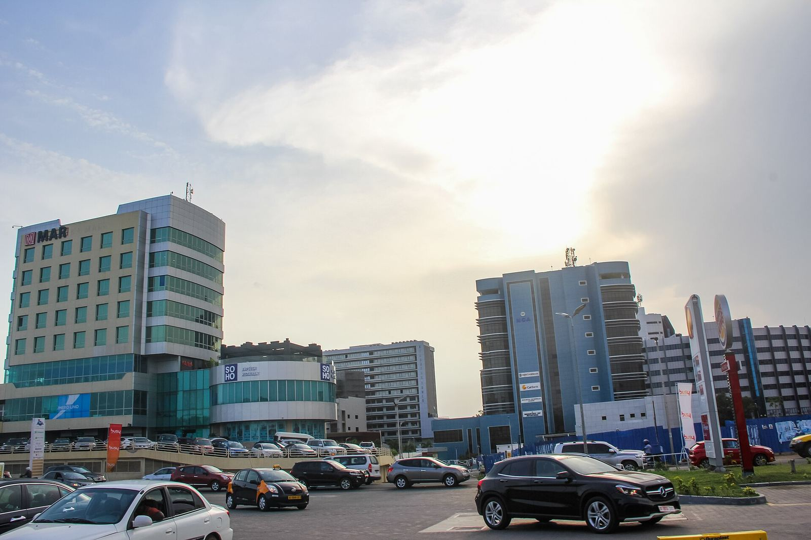

安全
攻击者劫持 .gh、.sl、.as 三个国家顶级域，为谷歌等大公司域名骗取 TLS 证书，Chrome 已拦截


谷歌 Chrome 安全团队 2026 年 10 月 6 日在官方博客披露，上周发现 .gh（加纳）、.sl（塞拉利昂）和 .as（美属萨摩亚）三个国家和地区顶级域名遭到一系列劫持。谷歌称，这些事件并非谷歌系统被攻破，而是第三方顶级域注册管理机构被攻破，令所有以 .gh、.sl、.as 结尾的域名都处于风险之中。
谷歌说，攻击者在劫持期间修改了权威 DNS 记录，并为「several Google domains」以及其他机构的域名拿到了未经授权的 HTTPS 证书；由于攻击方式的特点，谷歌认为签发这些证书的证书颁发机构（CA）没有做错什么。Ars Technica 解释说，控制了 DNS 记录，攻击者就能通过自动化的域名控制验证，持有这类证书便可以在密码学意义上冒充相关网站。
「browser-side intervention should not be relied on to protect your users」
谷歌称已通过 CRLSets 在 Chrome 中立即封锁涉及谷歌的未授权证书，并与签发 CA 合作吊销；之后从证书透明度（CT）日志中又发现了包括「several leading global brands and widely used online services」在内的更多受影响机构，也一并在 Chrome 中封锁。Chrome 用户无需操作，但谷歌提醒：「browser-side intervention should not be relied on to protect your users」，它无法保证找到了所有受影响域名，Chrome 的拦截也保护不了非 Chrome 用户。
谷歌建议域名所有者持续监控所有域名的 CT 日志，并发布带 ACME 账户绑定的严格 CAA 记录，防止攻击者在 DNS 控制权恢复后利用缓存的验证结果继续签发证书。Ars Technica 称，谷歌没有点名受影响的自家域名或其他机构，未授权证书的数量也不清楚。本稿只转述已核对的公开报道。
摘记，不是官方媒体。事实以所链出的原始报道为准。